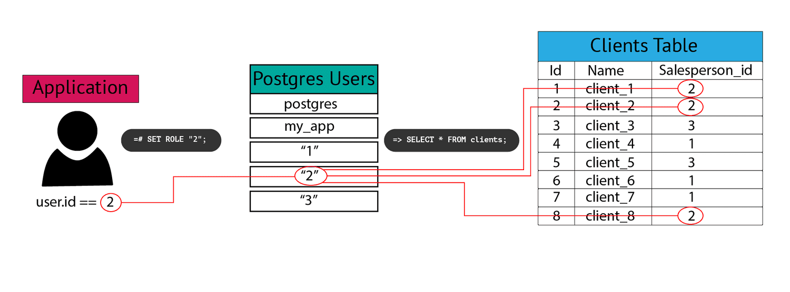

Published Articles
Using PostgreSQL Views in Django
Views in PostgreSQL allow you to query against the results of another query. Views can be composed of columns from one or more tables or even other views, and they are easy to work with in a Django app. In this article, you’ll learn about the two different types of Postgres views and how to decide when and if you should use them. Finally, you’ll create a view and set up a Django app to use it.
OOMKilled: Troubleshooting Kubernetes Memory Requests and Limits
If you’ve been working with Kubernetes for any period of time, you’ve probably come across the OOMkilled error. It can be a frustrating error to debug if you don’t understand how it works. In this article, we’ll take a closer look at the OOMKilled error, why this error occurs, how to troubleshoot it when it happens, and what steps you can take to help prevent it.
PostgreSQL Partitioning in Django
Postgres 10 introduced partitioning to improve performance for very large database tables. You will typically start to see the performance benefits with tables of 1 million or more records, but the technical complexity usually doesn’t pay off unless you’re dealing with hundreds of gigabytes of data.
Can you Prevent Browser Fingerprinting?

Browser fingerprinting is a method of identifying and tracking website visitors that doesn’t rely on cookies or login sessions. Instead, visitors are identified by collecting a series of browser parameters, from browser version to screen dimensions and installed fonts. Each parameter is of limited utility on its own, but when combined with others can be used to create a unique identifier for each website visitor.
Python Code Coverage Using GitHub Actions and Codecov
In this tutorial, we’ll use a Python package called Coverage to generate a code coverage report locally. Then we’ll utilize the power of Codecov along with GitHub Actions to integrate our coverage report into our pull requests. The code repository is available here or you can follow along to replicate it yourself.
Postgres Row-Level Security in Python and Django

Postgres introduced row-level security in 2016 to give database administrators a way to limit the rows a user can access, adding an extra layer of data protection. What's nice about RLS is that if a user tries to select or alter a row they don't have access to, their query will return 0 rows, rather than throwing a permissions error. This way, a user can use select * from table_name, and they will only receive the rows they have access to with no knowledge of rows they don't.
Creating Custom Postgres Data Types in Rails
Postgres ships with the most widely used common data types, like integers and text, built in, but it's also flexible enough to allow you to define your own data types if your project demands it. Say you're saving price data and you want to ensure that it’s never negative. You might create a not_negative_int type that you could then use to define columns on multiple tables. Or maybe you have data that makes more sense grouped together, like GPS coordinates.
How to Write Effective Technical Articles
 Just because you know a topic well doesn’t mean you’ll crank out a great tutorial on the subject. Here are a few things to keep in mind to help you write informative, engaging, and useful technical tutorials:
Just because you know a topic well doesn’t mean you’ll crank out a great tutorial on the subject. Here are a few things to keep in mind to help you write informative, engaging, and useful technical tutorials:
Custom Postgres Data Types In Django
No matter how you decide to define your datatype, Django has the functionality to allow you to map custom column data to model attributes. You can achieve this by extending the Django field class. In this walkthrough, we'll see how to create custom types in Postgres and then use them in Django to ensure consistent data types across your application. We will do this by walking you through an example project.